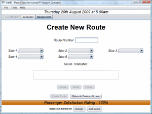
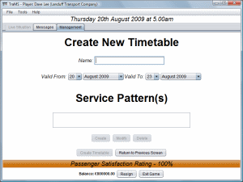
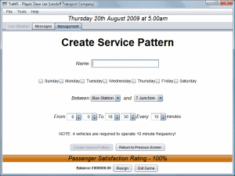
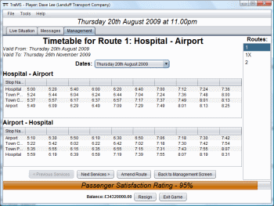

From the Management Screen, you can click "Create Route" to create a new route. You need to enter the following information on the Create Route screen which appears:
Route Number: You must enter a route number - this can either be a number (e.g. 1) or text (e.g. 1B).
Stops: You may choose up to 5 stops which this route will serve by clicking on the down arrow and choosing from the pop-up list.
Route Timetable: You must create 1 or more timetables for this route - each timetable has an exclusive period of validity.
Each timetable must have the following information:
Name: Give a descriptive name for this timetable so that you will recognise it later.
Service Pattern(s): You must create 1 or more service patterns for this route. Service patterns determine the frequency and hours of operation of the route on certain days.
Each service pattern must have the following information:
Name: Give a descriptive name for this service pattern so that you will recognise it later.
Days of Operation: Tick the box beside the days when this service will operate.
Between: Choose the stops which the service will run between with this frequency.
From/To/Every: Choose the times that the route will operate and the frequency it will operate at.
Once you have added at least one timetable and one service pattern, the "Create Route" button will be available. After clicking on the "Create Route" button, the route will be saved, and you will be returned to the Management Screen. If you wish to be returned to the Management Screen without saving, click on the "Return to Previous Screen" button.




To access the View Route Info screen, click on "View Route Info" from the Management Screen. You can view the route timetable for a particular day by clicking on the day from the box. To change the route, click on the relevant route number from the right-hand side.
Click on "Amend Route" from the View Route Info screen to make amendments to a route. Follow the guidance given for stops, timetables and screen patterns as above.
You cannot delete routes in the 2nd Preview Edition. However, routes will be disabled if all timetables for that route, have expired.